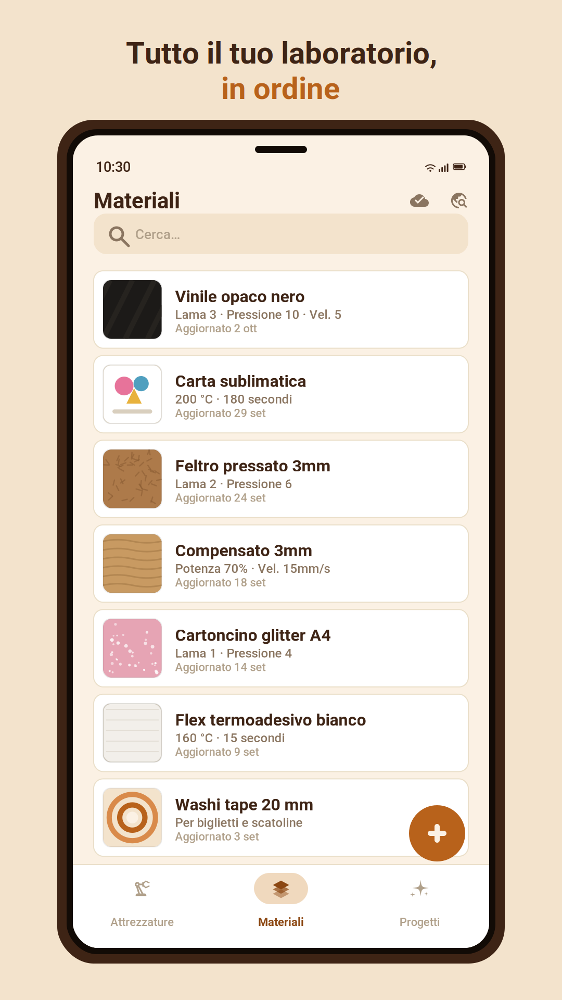

Lama e pressione per ogni materiale, temperature e tempi della pressa, i passaggi di ogni progetto: tutto quello che scrivevi su carta, in ordine e sempre con te.

In uscita a breve, per Android. In italiano e in inglese.

Attrezzature, Materiali e Progetti: il plotter e la pressa, il vinile e il cartoncino, quello che crei passo dopo passo.
Collega un progetto ai materiali e agli attrezzi che usa. Apri un materiale e vedi tutti i progetti che lo usano.
Le foto dei tuoi lavori, dalla fotocamera o dalla galleria, e i link a tutorial, video e fornitori.
Trovi qualsiasi scheda in un attimo, in tutte le sezioni insieme.
Schede e foto vengono salvate sul tuo Google Drive, in una cartella nascosta che vede solo Craftfolio.
Nessun account, nessuna pubblicità, nessun tracciamento. Funziona anche senza rete.